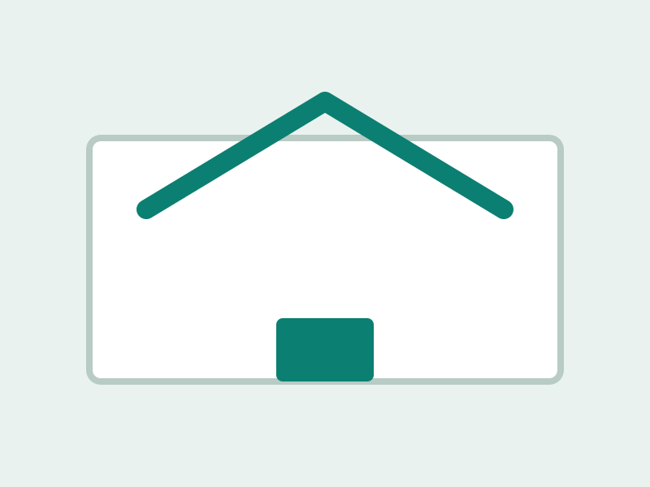

栃木 / 鬼怒川温泉の宿を楽天トラベルで探す
自動取得が0件だった場合の検索導線です。空室・料金・口コミは楽天トラベル側で確認してください。
1泊1室あたり目安確認〜
楽天トラベルで見るTheme Page
家族旅行で確認したい宿候補です。

自動取得が0件だった場合の検索導線です。空室・料金・口コミは楽天トラベル側で確認してください。
自動取得が0件だった場合の検索導線です。空室・料金・口コミは楽天トラベル側で確認してください。
自動取得が0件だった場合の検索導線です。空室・料金・口コミは楽天トラベル側で確認してください。